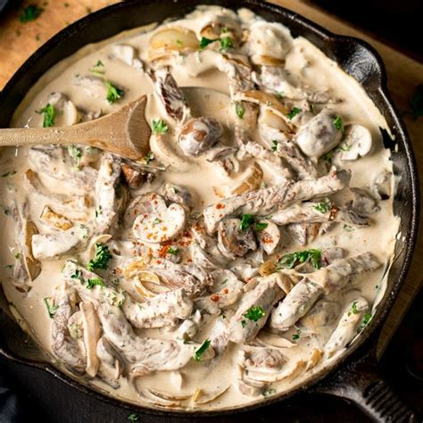

Home
Stroganoff

Description
Stroganoff is a dish with it's origins in mid-19th-century Russia. It a savory dish of sautéed beef in a creamy sauce.
Traditionally served over pasta pasta, Stroganoff can also be served over rice. Stroganoff has many variation that include the way the meat is cut and what ingredients are included.
- 2 # beef serloin, cut into 1/2-inch thick strips (may subtitute ground beef)
- 1/2 cup red wine
- 1 teaspoon salt
- 1/2 teaspoon ground black pepper
- 1 tablespoon extra-virgin olive oil
- 1 1/2 sticks of butter
- 1 large onion, diced
- 3 cloves of garlic, minced
- 1 # sliced mushrooms
- 1/4 cup all-purpose flour
- 1 1/3 cups beef stock
- 1 tablespoon Worcestershire sauce
- 1 teaspoon prepared yellow mustard
- 2 teaspoons crushed red pepper flakes
- 1 # Soure Cream
Steps
- Place oil in large skillet or heavy pan and heat until shimmering
- Once oil is hot, add beef and sauté until brown
- Add garlic, onion, and both peppers and continue to sauté until onion is translucent
- Add 2 tablespoons of butter and mushrooms (about 10 minutes)
- Sauté until soft
- In a seperate skillet melt 1/4 cup of butter and wisk in flour. Cook until the roux is golen brown and has a slight nutty flavor
- Add red wine, beef stock, and Worcestershire sauce and bring to a boil
- wisk in roux and cook util thick
- Serve over rice or noodles